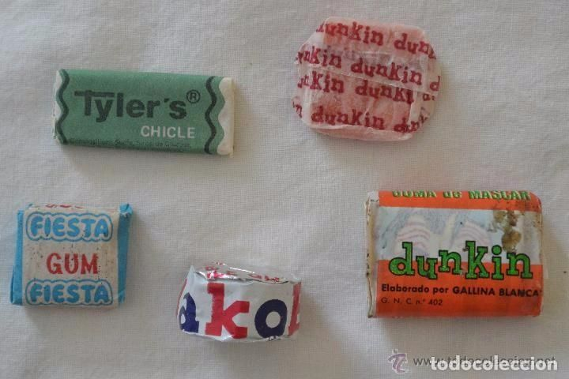

La Dulce Historia del Chicle
📜 Orígenes Antiguos
Los mayas y aztecas masticaban la resina del árbol de zapote para limpiar sus dientes y calmar la sed. ¡Era el "chicle" original!

🔄 De México al Mundo
En el siglo XIX, el general Santa Anna llevó la idea a EE.UU., donde Thomas Adams la convirtió en el chicle comercial que conocemos hoy.
